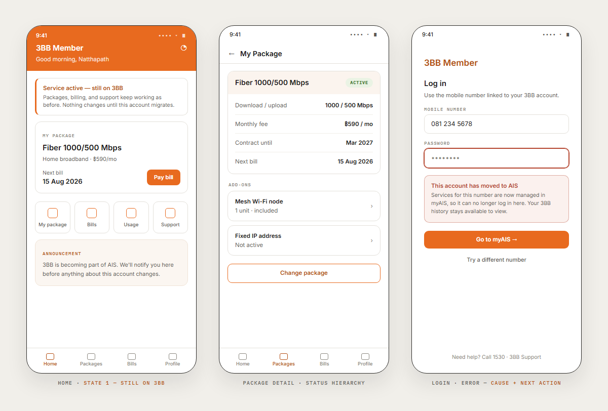

During the 3BB → AIS transition, customers were not all in the same state at the same time: some still on 3BB services, some already migrated to AIS, some waiting. The app couldn't send everyone to the same destination or show everyone the same message — each group needed the right status, the right explanation, and the right next action. This page re-sets that logic live, plate by plate.
3BB Member was live — internet services, packages, billing, account settings, millions of users on app and web — while the company itself transitioned to AIS. The work arrived as a CX requirement:
"After migration, each customer can be in a different service state — the app has to show the right status, the right options, and the right next step, for every one of them."
Service & migration requirement, paraphrased — how work arrived on this projectPackages, billing, and support keep working exactly as before. Nothing changes until this account migrates.
Services now run on AIS. Manage packages and billing in myAIS — this app can no longer make changes for you.
Services stay on 3BB until the switch completes. We'll notify you here when it's done and what changes after.
Three different truths on the same home screen. The design work was making each one unmistakable — and impossible to confuse with the other two.
service_state = check(customer) ├─ still_3bb → stay · 3BB Member — full service continues ├─ migrated_ais → route · myAIS / AIS website takes over └─ waiting → hold · status, timeline, what changes next
A business rule becomes a flow only when its states exist on screen. I mapped what the user needed to see at each step, then designed the flow, the screen states, and the interaction logic around it — in the app's inherited design language, so nothing felt like a second product.
Packages and billing for this account are now managed in myAIS. Your 3BB Member history stays available to view.
The dialog answers the three questions every interruption must: what happened, what it means for me, where I go next.
| Function | The hard state | Migration variant |
|---|---|---|
| Login | error states — clear copy, cause, next action | state check routes to the right home |
| Registration | condition states — who can register, and why not | migrated accounts directed to AIS |
| Billing | option states — what can be paid, where | billing ownership follows the service state |
| Package & service detail | status hierarchy — active, changing, ended | right status per customer group |
Where an existing pattern solved the problem, I reused it. Where it didn't quite fit a new service flow, I extended it in the same visual and interaction language — users relearned nothing, and Dev built against components that already existed in the codebase.

I proposed flows, walked CX, PM, and Dev through them together, and iterated until everyone agreed on the same flow and the same implementation logic — feasibility questions answered while the direction could still move, not after handoff.
The functions that shipped cleanest were the ones where CX, PM, Dev, and I aligned on the flow and its edge cases before a screen was finished. Nobody had to explain those twice.
Bring Dev into CX conversations by default, not as a follow-up step. The earlier feasibility entered the discussion, the fewer flows needed reworking once handoff started.